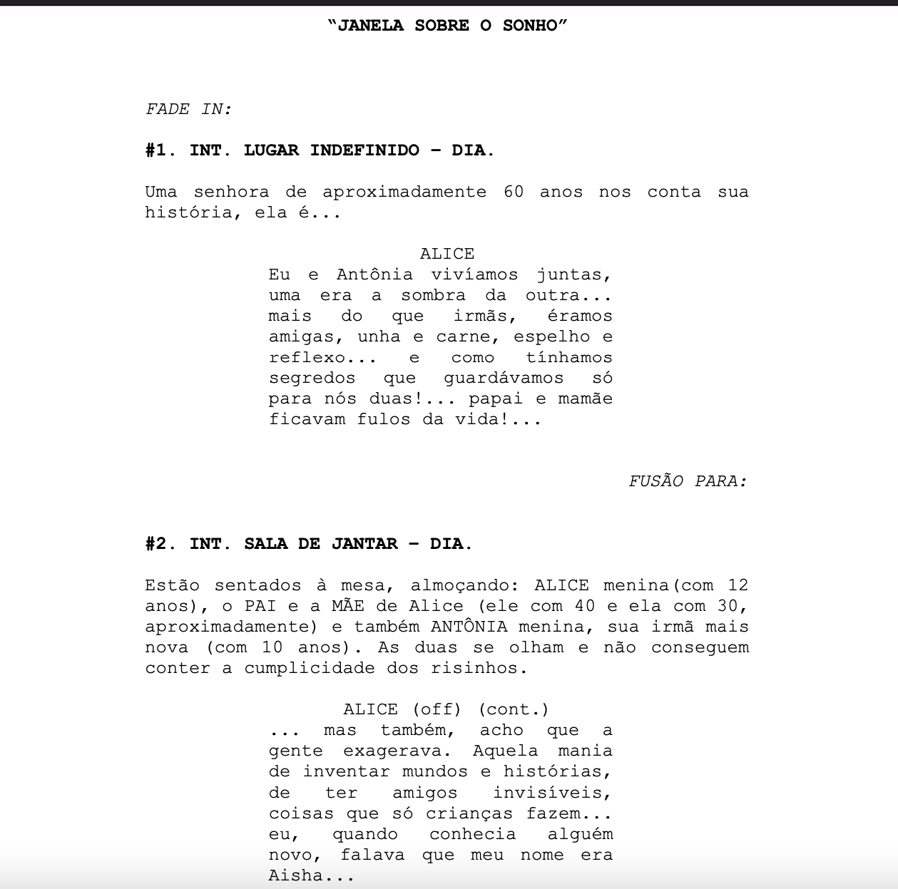

REALIZAÇÃO III
AULA 1
Aula: Introdução às Ferramentas Elementares da Realização
Objectivo da aula
- Compreender os princípios básicos do desenho dramatúrgico de uma cena;
- Identificar e aplicar técnicas de decupagem na análise de um roteiro;
- Explorar o blocking como ferramenta de construção narrativa e expressiva;
- Exercitar a técnica de decupagem através da definição de set up’s.
1. Estudo do desenho dramatúrgico da cena
Definição: O desenho dramatúrgico é a espinha dorsal da cena.
O desenho dramatúrgico refere-se à estrutura interna da cena: como os conflitos, acções, diálogos e emoções se articulam para gerar sentido e tensão.
Trata-se de identificar o conflito, a acção principal, os objectivos das personagens e como estes elementos evoluem dentro do tempo fílmico.
Elementos-chave:
- Quem? Personagens centrais e secundários;
- O quê? A acção que move a cena;
- Porquê? O motivo que dá sentido à acção;
- Como? Estratégias, obstáculos, tensões.
Exemplo prático:
Análise da cena do interior do apartamento onde há um sonho no filme "Ainda Orangotango" — observar como as múltiplas microcenas coexistem num fluxo contínuo.
Identificar:
- Personagens principais
- Conflito central
- Ponto de viragem
2. A decupagem através da análise do roteiro
Definição: A decupagem é a tradução do texto (roteiro) para um plano visual. É onde se decide como filmar aquilo que está escrito.
Decupar é transformar o roteiro literário em roteiro técnico, definindo os planos, os ângulos, os movimentos da câmara e o ritmo visual.

Tarefa:
- Ler a cena e compreender intenções dramatúrgicas;
- Identificar os momentos-chave (entradas, mudanças de tom, clímax);
- Transformar a descrição literária em planos concretos (aberto, médio, close, travelling, etc.);
- Criar um plano de filmagem coerente.
Discussão:
- Como o roteiro sugere a visualidade da cena?
- Que decisões o realizador toma para traduzir o texto em imagem?
3. Blocking Scene / Bloqueio de Cena
Definição: O blocking é a coreografia dos actores e da câmara no espaço.
Blocking é a marcação dos movimentos dos actores e da câmara no espaço da cena. É essencial para a fluidez narrativa e para a composição visual.
Funções:
- Direccionar a atenção do espectador;
- Construir as relações de poder e emoção entre as personagens;
- Explorar o espaço físico como um elemento narrativo.
Exemplo visual:
Cena de um jantar → a posição da câmara e dos actores pode sugerir proximidade, tensão ou isolamento.
Film Blocking/Bloqueio de cena, by StudioBinder
4. Técnica de decupagem: Quantidade de Set Up’s
Definição: Um set up corresponde a uma posição de câmara (tripé fixo, grua, dolly, handheld).
De cada set up podem nascer várias variações de enquadramento.
A quantidade de set-ups influencia o ritmo, a cobertura da cena e o tempo de rodagem.
Princípio:
Poucos set up’s → filmagem mais rápida, mas menos diversidade visual;
Muitos set up’s → maior cobertura e possibilidades na montagem, mas aumenta o tempo e custo de produção.
Exemplo prático: calcular quantos set up’s são necessários para uma cena de diálogo simples (2 personagens, 1 página de roteiro).
- Mínimo: 2 (um para cada personagem).
- Ideal: 5 a 7 (planos gerais, médios, closes e reaction shots).
Exemplo: Como seria uma cena do sonho no filme Ainda Orangotango, com muitos cortes?
Set Ups, by RocketJump Film School
Referências Bibliográficas
1. Decupagem e Processo Criativo
Canonico, Amadeo. A Decupagem no Processo Criativo do Diretor de Cena. Este artigo analisa a origem e função da decupagem na construção cinematográfica, com base em autores como David Bordwell, e relaciona-a com mise-en-scène, direção de atores e montagem. [A DECUPAGE...OR DE CENA]
2. Decupagem e Acessibilidade
Virginio, Thiago Pontes. A construção da decupagem e o papel do diretor na pré-produção de um cinema à luz do desenho universal. Trabalho de conclusão de curso da UFPB que discute como o diretor pode aplicar princípios de acessibilidade na decupagem visual e sonora de um filme. [Repositóri...papel ...]
3. Desenho da Cena em Processos Colaborativos
Revista da Fundarte. O desenho da cena em um processo colaborativo: investigações acerca da atuação do designer de cena. Este artigo investiga como o desenho da cena é concebido em processos colaborativos, com foco na horizontalidade das hierarquias criativas. https://www.teatronaescola.com/index.php/noticias/item/download/33_53c57fb8880209d0eff373c9faea3f2e
Licensed under the Creative Commons Attribution Share Alike License 4.0